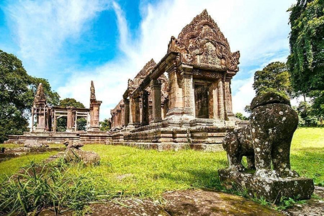

In the 6th century, King Yasovarmamn I ( 889-900) began work on the original dedicated to Shisa as result of
spiritual development, increased political prestige and economic growth was naturally reflected in the
Temple undergoing more than 300 years of consultation with deal of remodeling under subsequent King
Suryavarman II ( 1113 - 1150) this increased prestige naturally changed the original small sanctuary into
one of the greatest Khmer temples of all times. This ranking was the result of the finest in situ carving
that depicted the highest standards of unique Khmer architecture.
Under the Franco-Siamese Treaty of 1904 and 1907, the line of frontier between Cambodia and Thai along the
Dongrak Mountains followed justice at the Hague officially found that the Preah Vihear Temple situated
inside the Cambodia territory.

Preah Vihear Temple is located in a pleasant environment with an attractive countryside slightly east of the
mid section of the Dongrek Mountains.
It is perched on the edge of a giant cliff, about 625 meters above sea level in Preah Vihear Province,
Northern part of Cambodia, 625km from the capital city of Phnom Penh. It is also situated close to the
Cambodia-Thai border.
The temple has four levels and four courtyards which comprise of five Gopuras ( entrance pavilions some
times surmounted by tower ) This group of building was the King's residence when he came to pay homage to
the mighty God, and the two wings were the shelters for the pilgrims. The main temple are used for the
high-ranking supreme divinities, this mighty group of building is considered as the center of the whole
temple complex.
The front stone stairway: this main passage is on the North side. The stairway is 8 meters wide and 78
meters long,. The fist flight has 162 steps. At the first landing is a large stone singa statue on stone
block. Another 54 flight of steps 4 meters wide and 27 meters long leads up to the second landing also
decorated with stone signa statue.
The Nagaraj Courtyard: this stone-paved is 7 meters wide by 31.8 meters long. From here the stairway leads
up to the first-level Gropura. The Stairheads are in the form of seven-headed snakes called "Ngu Suang "
facing North towards the Prasat. The heads and tails of nagas on both sides look like ordinary snakes,
characterizing and early example of this type of animal figures. The head portion of the naga on the west
side looks very impressive because it is made from a single solid stone.